這是誰的多元文化節慶？
課例研究01- 六年級社會領域公開課
- 學習共同體課例研究
- 授課教師：陳香吟老師
- 六一七班｜2026.10.21

小組拿著學習單與課本，三位贊成者與一位質疑者開始對話。
課例背景與學習目標
課例背景02- 單元：康軒六上第二單元「族群交流如何影響臺灣社會」探究活動。
- 目標一：理解臺灣是多元文化的地方，欣賞並尊重文化的多樣性。
- 目標二：從開齋節等文化活動選定議題，進行探究與實作。
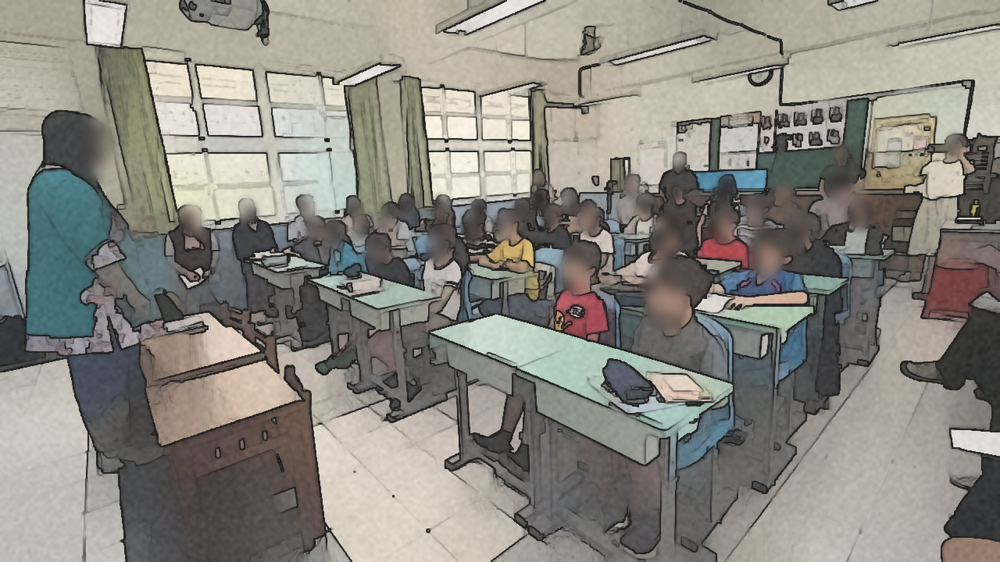
01:29 老師：「你們很熟悉的是跟平板做朋友……所以我們就把平板收起來。」
教學設計：讀、說、做、想
課例背景03- 讀一讀：用開齋節市集與越南麵包圖片破題。
- 說一說：把學習單重點對應到課本觀點。
- 做一做：三人贊成、一人質疑，建構立場。
- 想一想：建議開齋節增加或減少什麼活動。
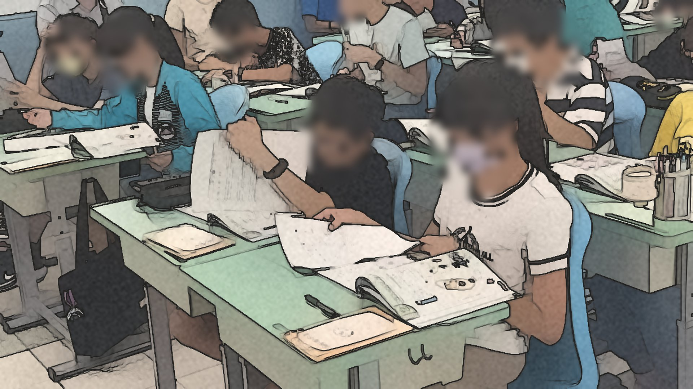
板書把每一段活動的重點留在黑板上，形成學生可回看的「視覺暫留」。
說課：備課的三個關鍵思考
說課04- 低門檻啟動：用「對比兩張照片」讓每個人都能開口。
- 概念邊界：釐清新住民與移工，並區分族群、宗教與地區。
- 首次嘗試質疑者：讓習慣服從權威的高年級學生練習提出不同看法。
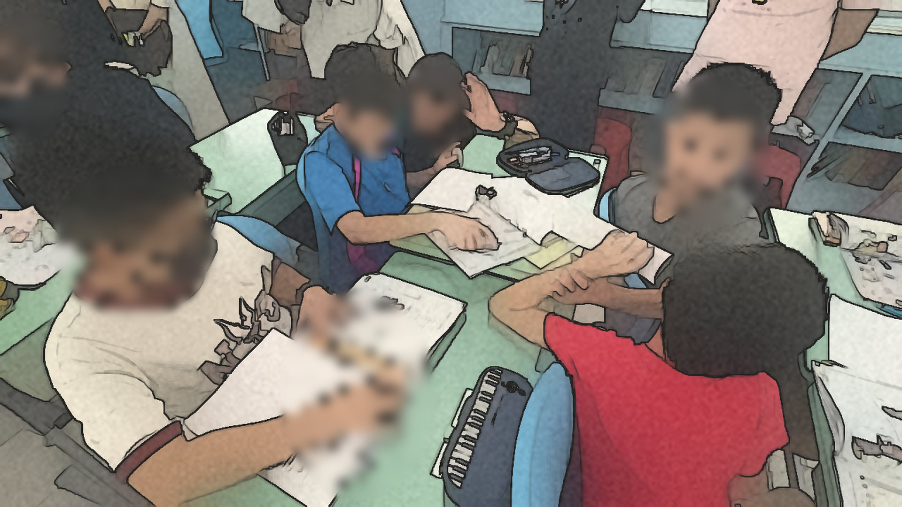
板書：族群、商店、移工、香菜——從生活線索走向課本概念。
觀課焦點：看見學生的學習
觀課05- 全班氛圍：是否有安心學習、支持社會情緒互動的環境？
- 學習歷程：學生是否互相協助與討論？誰停滯、誰超前？
- 學習結果：學習是否成立？困難在哪裡？思考是否深化？
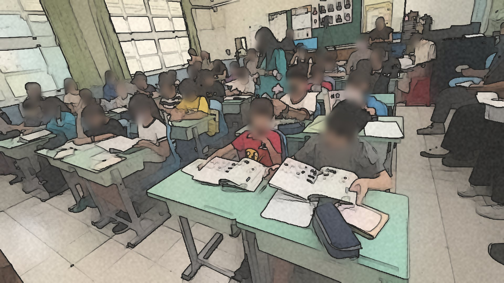
觀課者依座位表分組守望，特別留意三位需要支持的學生。
事實一：從家門口的商店開始
學習事實｜描述06- 老師展示學校附近的越南小吃、奶茶店與火鍋店照片，學生立刻認出地點。
- 學生紛紛指認：龍安路、四維路市場的小巷子、光華國小附近。
- 老師歸納：有這些商店，代表附近有吃、用這些東西的人。
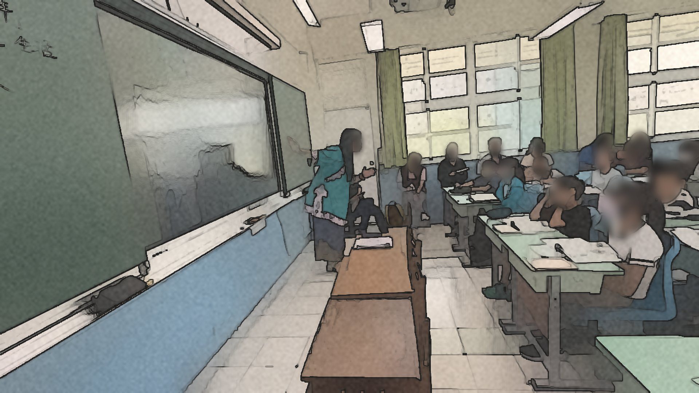
04:19 老師：「能夠有這麼多不一樣的店，代表有吃這些、用這些的人口在這附近。」
事實二：看見人、物與細節
學習事實｜描述07- 兩人一組先說出圖片裡看到的兩樣東西，再請每組一號發表。
- 學生說出「東南亞族群」「東南亞商店」，也有人注意到香菜。
- 老師整理出三種觀察方向：人、物，以及組成細節的元素。
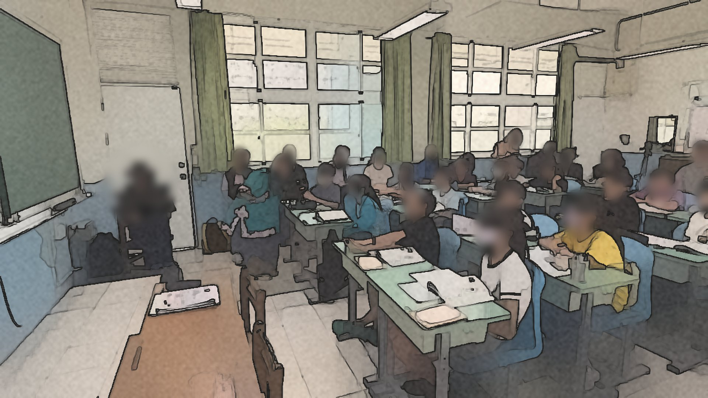
12:09 老師：「我們回答的可能是人，可能是物，甚至會看到細節裡面組成的元素。」
事實三：「我不知道要看哪一句」
學習事實｜描述08- 學生要在課本 52–59 頁找到與學習單相同的觀點，有人卡住了。
- 老師給兩個方法：先看標題，再從段落中找一個專有名詞。
- 老師也請已找到的同學：「你教他。」讓同伴成為支持者。
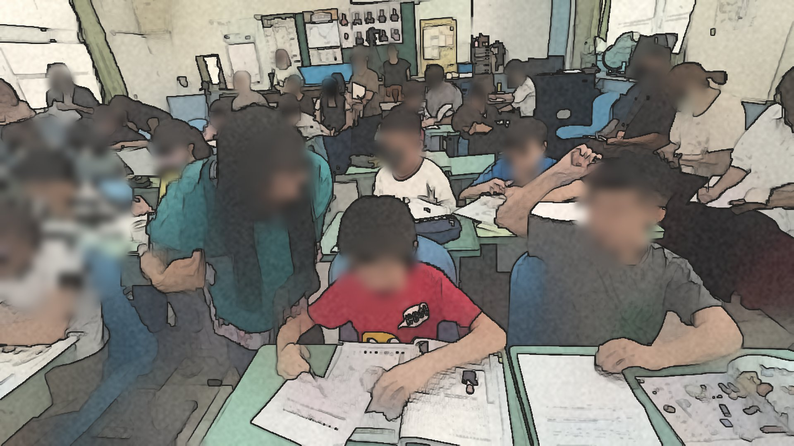
15:13 老師轉述：「第一個學習單我不知道要看哪一句，那麼多要看哪一句？」
事實四：三人結盟與一位質疑者
學習事實｜描述09- 一到三號握手「結盟」，依新聞標題加一句結論形成贊成立場。
- 四號成為唯一的反對者，要聽完結論後提出不同看法。
- 有學生困惑：「為什麼我要質疑你們？」質疑的意義需要被建立。
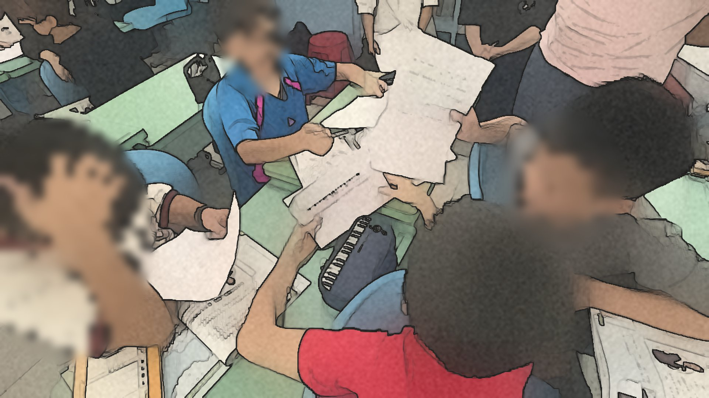
16:24 老師：「恭喜你們，你們結盟了。四號你變成是唯一的反對者。」
事實五：小組裡的卡關與互助
學習事實｜描述10- 學生回到課文找句子，一邊讀一邊卡在不會寫、不會唸的字。
- 「這個字不會寫」之後，同組同學一起回到課本找字、確認讀音。
- 有組員能讀出結論，但要歸納成自己的理由仍有困難。
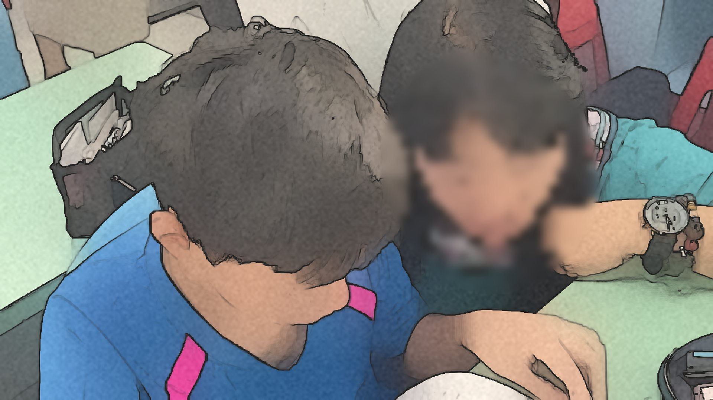
20:41 學生：「這個字不會寫……」小組在文本前停下來，一起想辦法。
事實六：「我放棄了，可以換一個嗎？」
學習事實｜描述11- 錄音時，學生一次次重唸「臺灣的族群交流將不再是衝突的來源」。
- 有人唸得斷斷續續、重來好幾次，最後說出「我放棄了」。
- 同伴接手示範，平板操作與收音問題也占去不少時間。
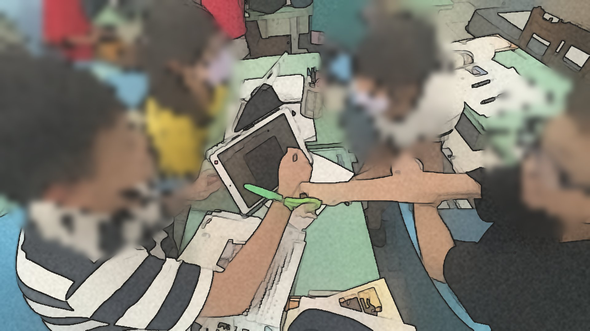
27:39 學生朗讀：「臺灣的族群交流將不再是衝突的來源，而是孕育出更璀璨多元的文化景觀。」
事實七：老師蹲下來的支持
學習事實｜描述12- 老師巡視時在學生身旁耳語提問，提供二選一與可能的反對方向。
- 對因鏡頭緊張的學生，老師說：「用寫的好不好？」保留他的角色。
- 老師沒有跳過學生原本的任務，而是換一種方式讓他完成。
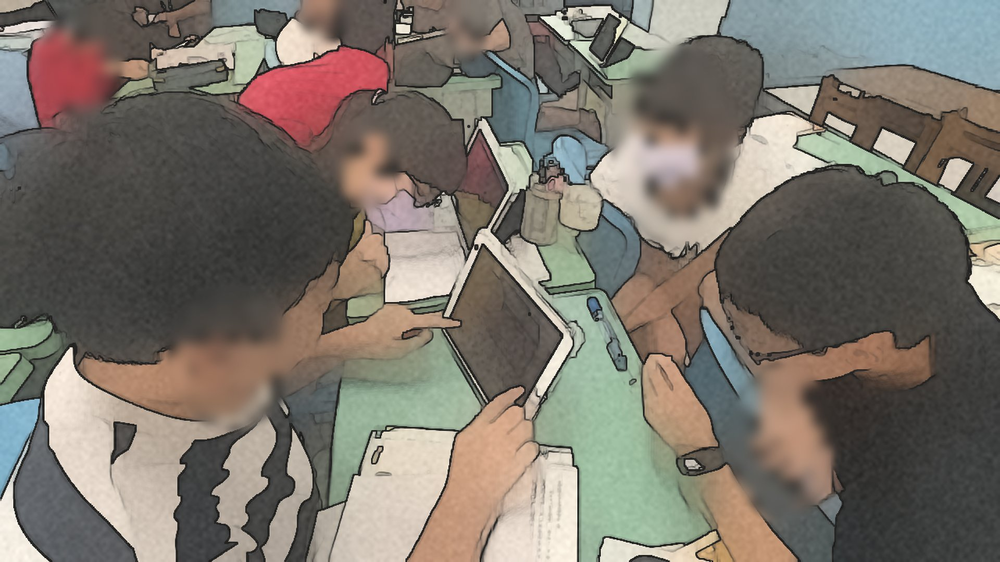
36:31 老師：「那等一下你可以用寫的嗎？好，用寫的好不好。」
事實八：「不一定質疑就是反對」
學習事實｜描述13- 第六組最快完成，質疑者說：尊重不同的信仰，就可以避免產生誤解。
- 老師回應：他的理由真的針對贊成者說明，質疑不一定是反對。
- 老師再連到課本 60 頁：居民、參加者、主辦者與關心團體的立場。
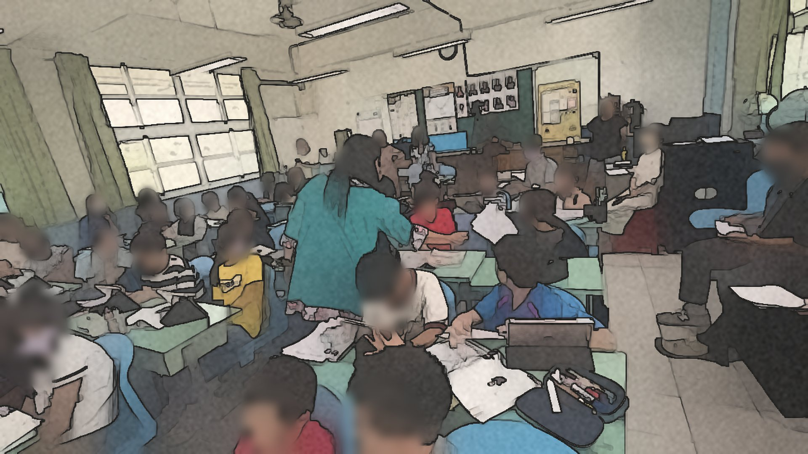
38:28 老師：「所以他的反對理由，真的有針對贊成者的理由下去說明……所以不一定質疑就是反對。」
詮釋一：傾聽關係讓質疑變安全
詮釋14- 質疑者單獨面對三人，起初顯得孤立；當雙方都回到文本，對話才開始。
- 「你教他」「用寫的」讓卡住的學生仍留在學習中，而非被跳過。
- 安全感來自被傾聽，而不是被要求立刻說出正確答案。
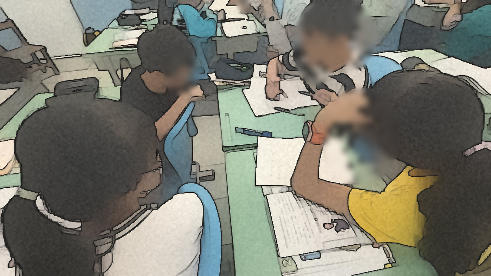
小組成員把頭靠向同一份文本，是傾聽關係最直接的身體語言。
詮釋二：伸展跳躍的多立場思辨
詮釋15- 從「看到什麼」到「誰的權益被影響」，任務難度逐步提升。
- 第六組的質疑把「尊重信仰」與「減少誤解」連起來，跳躍出現了。
- 多數學生仍停在找句子、唸句子，歸納成自己的論點還需要鷹架。
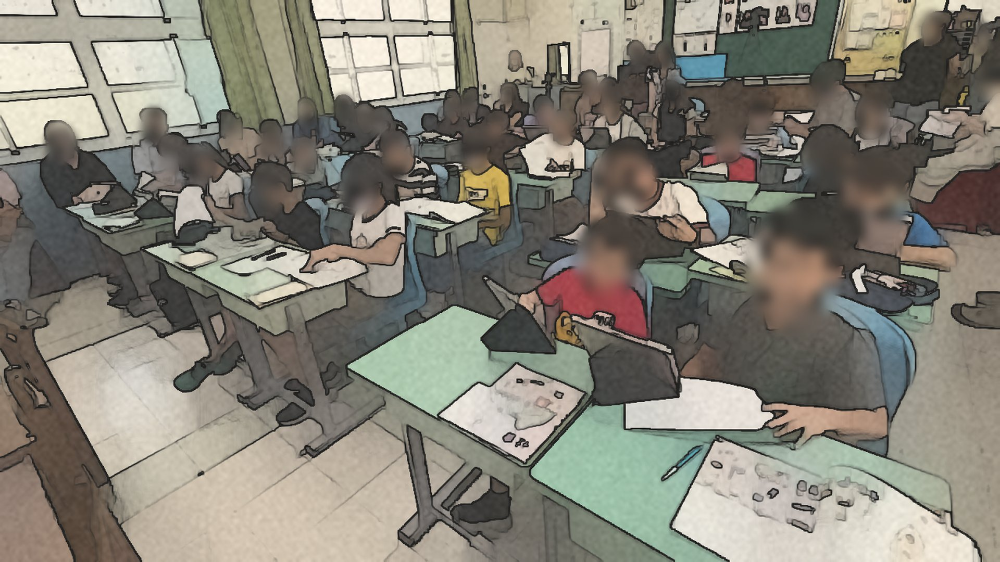
39:09 老師：「民眾有可能住在不同的地區……還有很多人是關心這個議題的人。」
詮釋三：主學習與附學習的平衡
詮釋16- 本課主學習是理解開齋節與多元文化的尊重、包容和差異。
- 平板錄音、上傳與語音輸入是附學習，這次占去相當多時間。
- 當工具操作擠壓討論，最需要深化的文化理解反而被壓縮。
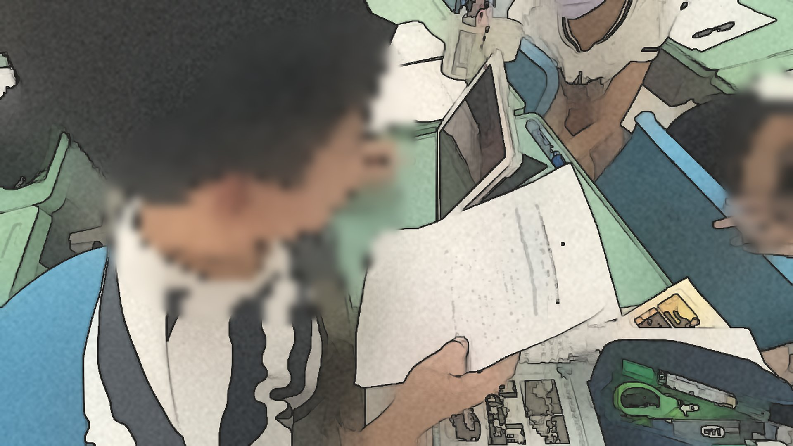
學生把平板靠近嘴邊重錄，注意力從「說什麼」移到「怎麼錄」。
反思一：讓質疑者不再孤單
反思17- 由「3 贊成＋1 質疑」調整為「2＋2」，讓不同立場都有夥伴。
- 立場分歧時重組專家小組，先整理理由，再回原組交流。
- 提供句型：「我同意……，但我認為還有……沒有被考慮。」
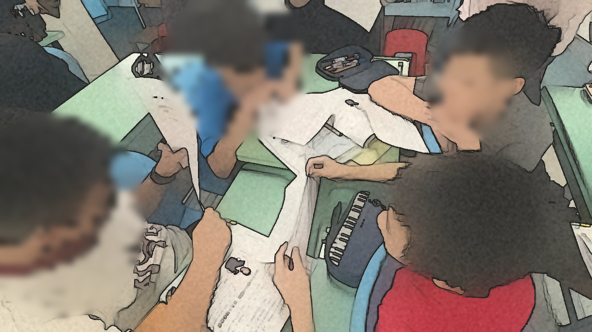
校長觀課紀錄：三人同意、一人反對，可改為兩人同意、兩人反對，避免孤軍。
反思二：給下一次課堂的設計
反思18- 座位改為四人面對面，並給小組一個共同話題，學習才能聚焦。
- 錄音等工具先在課前練習，課堂只保留與主題直接相關的操作。
- 課末留給學生自己整理：今天最重要的概念是什麼？
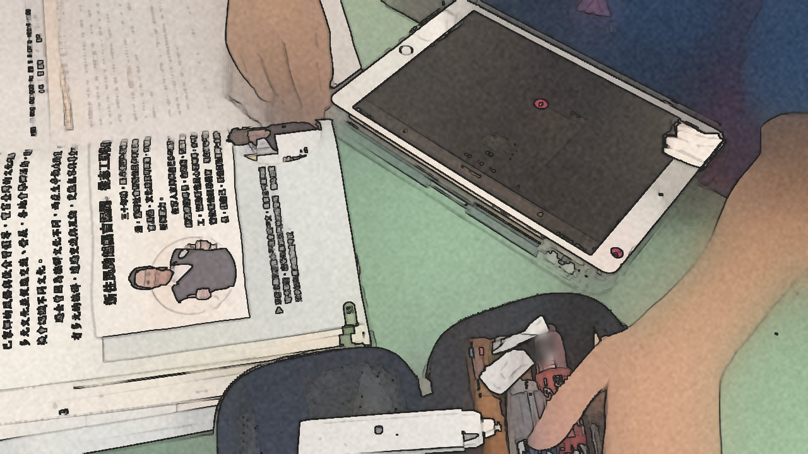
校長觀課紀錄：錄音需要訓練，今天第一次就做到，已經非常棒了。
結語：從誰的節慶到我們的社會
結語19- 學生從家門口的商店出發，開始看見身邊不同的生活方式。
- 質疑不是對立，而是讓理由更清楚、讓更多人的聲音被聽見。
- 教師的設計、協調與反思，正是課堂持續長出來的力量。
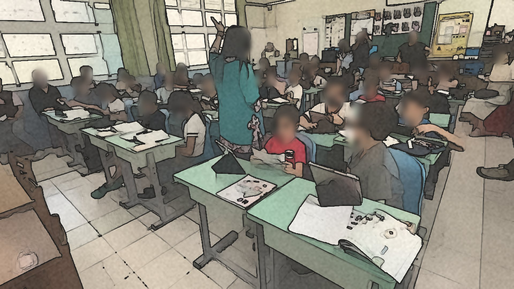
40:20 老師：「你認為可以增加一個什麼活動，或減少一個什麼活動？」